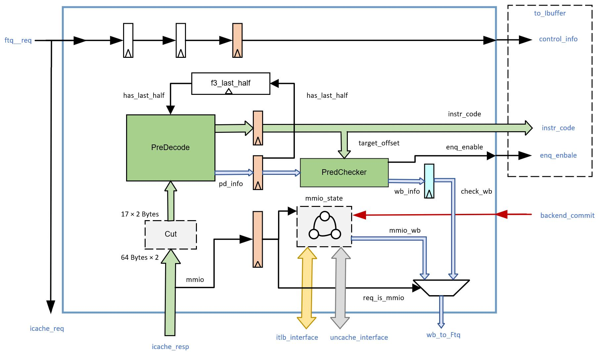
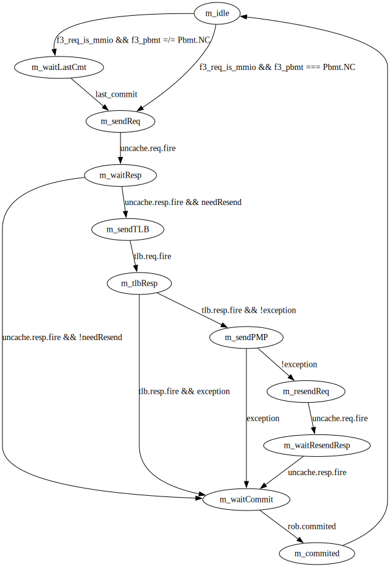
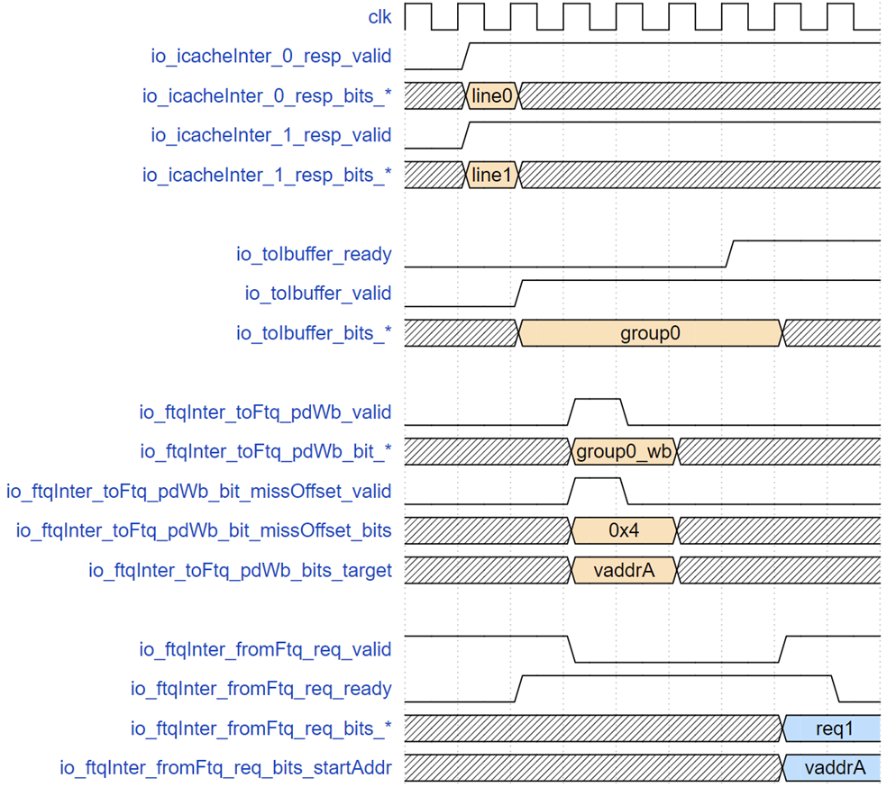
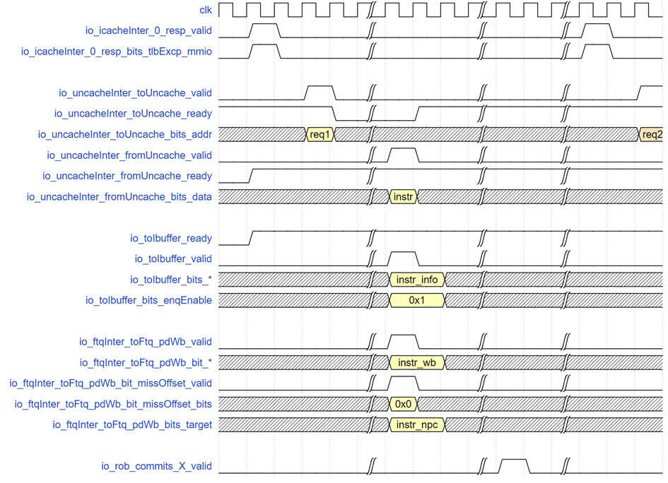

IFU
本文档参考香山IFU设计文档写成
本文档撰写的内容截至[c670557]
请注意，本文档撰写的测试点仅供参考，如能补充更多测试点，最终获得的奖励可能更高！
IFU说明文档
文档概述
本文档描述IFU的功能，并根据功能给出测试点参考，方便测试的参与者理解测试需求，编写相关测试用例。
为方便验证参与者，本文档中还额外给出了整体框图和流水级的示意图，以及各个rtl接口的详细说明。此外，本文档还给出了两个时序示例。
术语说明
| 名称 | 描述 |
|---|---|
| RVC（RISC-V Compressed Instructions） | RISC-V 手册"C"扩展规定的 16 位长度压缩指令 |
| RVI（RISC-V Integer Instructions） | RISC-V 手册规定的 32 位基本整型指令 |
| IFU（Instruction Fetch Unit） | 取指令单元 |
| FTQ（Fetch Target Queue） | 取指目标队列 |
| ICache（L1 Instruction Cache） | 一级指令缓存 |
| IBuffer（Instruction Buffer） | 指令缓冲 |
| CFI（Control Flow Instruction） | 控制流指令 |
| ITLB（Instruction Translation Lookaside Buffer） | 指令地址转译后备缓冲器 |
| InstrUncache（Instruction Ucache Module） | 指令 MMIO 取指处理单元 |
整体框图
以下是IFU的架构简图：

流水级示意图
香山的IFU一共分为5个stage。
F0 stage：接收FTQ请求，同时告诉FTQ自己已经ready了，同时，FTQ也会通知ICache准备数据。此外，这一阶段还会接受重定向信息。
F1 stage：从FTQ请求中先计算出每个指令的pc，half_pc，并计算cut_ptr（这是后续将icache返回的指令码进行切分的依据）
F2 stage：从icache获取响应数据（缓存行）并校验，提取出异常信息（包括页错误、访问错误、mmio信息）；生成预测到的指令范围（但这并不是一个数字，而是一个用多位表示的bool数组，该位为1表示这一指令在预测块范围内）；从缓存行中，利用上一阶段求出的cut_ptr切分出17×2的初步指令码，最后进行预译码和指令扩展。
F3 stage：这一阶段主要是对译码阶段的结果进行预检查，对RVC指令进行扩展，以及MMIO状态下的处理逻辑，并向IBuffer写指令码和前端信息
WB（写回）stage：将预检查的结果写回FTQ。根据预检查结果判断是否进行内部冲刷。
以下是一张示意图：

子模块列表
| 子模块 | 描述 |
|---|---|
| PreDecoder | 预译码模块 |
| F3Predecoder | F3阶段预译码模块 |
| RVCExpander | RVC指令扩展模块 |
| PredChecker | 预检查模块 |
| FrontendTrigger | 前端断点模块 |
IFU模块功能说明
FTQ 将预测块请求分别发送到 ICache 和 IFU 模块，IFU 等到来自 ICache 返回至多两个缓存行的指令码后，进行切分产生取指令请求范围限定的初始指令码，并送到预译码器进行预译码下一拍根据预译码信息修正有效指令范围，同时进行指令码扩展并将指令码及其他信息发送给 IBuffer 模块。当 ICache 查询地址属性发现是 MMIO 地址空间时，IFU 需要将地址发送给 MMIO 处理单元取指令，这个时候处理器进入多周期顺序执行模式，IFU 阻塞流水线直到收到来自 ROB 的提交信号时，IFU 才允许下一个取指令请求的进行，同时 IFU 需要对跨页的 MMIO 地址空间 32 位指令做特殊处理（重发机制）。
1. 接收FTQ取指令请求（F0流水级）
在F0流水级，IFU接收来自FTQ以预测块为单位的取指令请求。请求内容包括预测块起始地址、起始地址所在cache line的下一个cache line开始地址、下一个预测块的起始地址、该预测块在FTQ里的队列指针、该预测块有无taken的CFI指令（控制流指令）和该taken的CFI指令在预测块里的位置以及请求控制信号（请求是否有效和IFU是否ready）。每个预测块最多包含32字节指令码，最多为16条指令。IFU需要置位ready驱动FTQ向ICache发送请求。
1.1. F0流水级接收请求
IFU应当能向FTQ报告自己已ready。
所以，对于这一测试点我们只需要在发送请求后检查和ftq相关的的ready情况即可。
| 序号 | 功能名称 | 测试点名称 | 描述 |
|---|---|---|---|
| 1.1 | IFU_RCV_REQ | READY | IFU接收FTQ请求后，设置ready |
2. 指令切分产生初始指令码（F1、F2流水级）
F0流水级时，FTQ同时会向ICache发送取缓存行的指令。这是ICache在其S2流水级需要返回的，所以IFU在F2流水级才会得到ICache返回的缓存行。在此之前，IFU会在F1流水线先进行PC的计算，以及计算切分缓存行的指针。
进入F2流水级，IFU将会针对每个指令，取出对应的异常信息、物理地址、客户物理地址等。同时，根据FTQ的taken信息，IFU将会计算该预测块在无跳转和跳转发生情况下的有效指令范围。无跳转情况下的指令有效范围ftr_range即当前预测块从起始地址到下一个预测块的起始地址的差值。有跳转情况下的指令有效范围jump_range即当前预测块的起始地址到预测块中第一个跳转指令地址的差值。
最后，IFU需要从缓存行和上一流水级计算的指针，完成对17x2字节初始指令码的拼接。这里的拼接代码可能存在一些迷惑性
val f2_cache_response_data = fromICache.map(_.bits.data)
val f2_data_2_cacheline = Cat(f2_cache_response_data(0), f2_cache_response_data(0))
在调用cut之前，我们先是从ICache获取了缓存行（ICache返回的缓存行种类已经在ICache中进行了分类讨论，IFU中直接使用即可），然后将第0个缓存数据进行了拼接， 这一操作的原因来自于ICache中对数据的细粒度拆分：
fetch block可能跨缓存行，但是由于fetch block最大只有34B，如果将两个缓存行（2x64B）都传送给IFU则显得浪费，因此，fetch block的选择由ICache完成。
ICache返回给IFU的并不是直接的预测块，而是带有跨缓存行信息的64字节。
我们将每个缓存行分为8份，如下所示：
cacheline 0: |0-7|0-6|0-5|0-4|0-3|0-2|0-1|0-0|
cacheline 1: |1-7|1-6|1-5|1-4|1-3|1-2|1-1|1-0|
如果fetch block的起始位置为0-1，则必定不跨缓存行。
如果fetch block的起始位置为0-6，那么fetch block的位置为0-6~1-2，此时传送的缓存行结构如下：
cacheline 0: |0-7|0-6|xx|xx|xx|1-2|1-1|1-0|
由此，只要将该缓存行复制一遍，即可获得拼接后的fetch block。
综上所述，对这两种情况，我们都只需要把返回的cacheline复制一份拼接在一起，从中间截取就可以拿到数据。
详细的信息可以参考ICache文档
2.1. F1流水级计算信息和切分指针
F1流水级也会计算PC。
同时还需要生成17位的切分指针（也就是从拼接后的缓存行切出初始指令码的idx数组，在昆明湖架构中，计算方式为拼接00和startAddr[5:1]， 然后分别与0～16相加） 用于后续从缓存行提取初始指令码。
所以，首先我们需要检查F1流水级生成的PC的正确与否。如果可能，也需要检查一下切分指针的生成。
可以总结出以下的细分测试点：
| 序号 | 功能名称 | 测试点名称 | 描述 |
|---|---|---|---|
| 2.1.1 | IFU_F1_INFOS | PC | IFU接收FTQ请求后，在F1流水级生成PC |
| 2.1.2 | IFU_F1_INFOS | CUT_PTR | IFU接收FTQ请求后，在F1流水级生成后续切取缓存行的指针 |
2.2. F2流水级获取指令信息
包括获取异常信息、物理地址、客户物理地址、是否在MMIO空间等。
获取异常信息之后，还需要计算异常向量。ICache会为每个缓存行返回一个异常类型，只需要计算每个指令pc属于哪个缓存行， 然后将对应缓存行的异常类型赋给该位置即可。
所以，只需要分别检查几种指令信息即可。
| 序号 | 功能名称 | 测试点名称 | 描述 |
|---|---|---|---|
| 2.2.1 | IFU_F2_INFOS | EXCP_VEC | IFU接收ICache内容后，会根据ICache的结果生成属于每个指令的异常向量 |
| 2.2.2 | IFU_F2_INFOS | PADDR | IFU接收ICache内容后，会根据ICache的结果生成属于每个端口的物理地址。 |
| 2.2.3 | IFU_F2_INFOS | GPADDR | IFU接收ICache内容后，会根据ICache的结果生成0号端口的客户物理地址。 |
| 2.2.4 | IFU_F2_INFOS | MMIO | IFU接收ICache内容后，会根据ICache的结果判断当前取指请求是否属于MMIO空间。 |
2.3. F2流水级计算预测块有效指令范围
指令有效范围包括两种，无跳转和有跳转的
无跳转的指令有效范围为当前预测块从起始地址到下一个预测块的起始地址的所有指令。
有跳转的指令有效范围jump_range为当前预测块的起始地址到预测块中第一个跳转指令地址（包含第一个跳转指令地址）之间的所有指令。
最终的指令有效范围是两者相与的结果。
我们需要分别对两种有效范围进行检查，再检查最终结果。
| 序号 | 功能名称 | 测试点名称 | 描述 |
|---|---|---|---|
| 2.3.1 | IFU_INSTR_VALID_RANGE | NORMAL | IFU根据FTQ请求，计算无跳转指令有效范围 |
| 2.3.2 | IFU_INSTR_VALID_RANGE | JUMP | IFU根据FTQ请求，计算跳转指令有效范围 |
| 2.3.3 | IFU_INSTR_VALID_RANGE | FINAL | IFU综合两类指令有效范围，生成最终指令有效范围 |
2.4. 提取初始指令码
IFU需要将ICache返回的缓存行复制一份并拼接。然后利用上一流水级计算的idx数组，从缓存行提取17x2字节的初始指令码。
| 序号 | 功能名称 | 测试点名称 | 描述 |
|---|---|---|---|
| 2.4 | IFU_INSTR_CUT | CUT | IFU根据上一流水级的切取指针，从缓存行提取初始指令码。 |
3. 预译码（F2流水级，主要由PreDecode模块完成）
在F2流水级，我们需要将上一步完成切分的指令码交给PreDecode子模块,他的作用主要有二：
其一是生成预译码信息，包括该指令是否是有效指令的开始、是否是RVC指令、是否是CFI指令、CFI指令类型（branch/jal/jalr/call/ret）、CFI指令的目标地址计算偏移等。输出的预译码信息中brType域的编码如下:
| CFI指令类型 | brType类型编码 |
|---|---|
| 非CFI | 00 |
| branch指令 | 01 |
| jal指令 | 10 |
| jalr指令 | 11 |
其二是将初始指令码两两组合之后，得到16x4字节的指令码（从起始地址开始，2字节做地址递增，地址开始的4字节作为一条32位初始指令码）。
此外，预译码阶段还需要分类讨论，得出两种指令有效向量（起始指令是不是RVI指令的后半部分），并交给IFU进行判断选择，可以参阅后面的跨预测块32位指令处理部分
其他功能和详细内容（比如怎么判断RET和CALL指令等）参见PreDecode和F3Predecoder子模块的描述。
3.1. 指令码拼接
对于上一功能中生成的指令序列，应当拼接成为16x4的指令码序列。
| 序号 | 功能名称 | 测试点名称 | 描述 |
|---|---|---|---|
| 3.1.1 | IFU_PREDECODE | CONCAT | 将生成的指令序列拼接成为16x4的指令码序列 |
3.2. 判定RVC指令
PreDecode功能需要判断一条指令是否为RVC指令
| 序号 | 功能名称 | 测试点名称 | 描述 |
|---|---|---|---|
| 3.2.1 | IFU_PREDECODE_RVC | RVC | 传入RVC指令，应该判断为RVC |
| 3.2.2 | IFU_PREDECODE_RVC | RVI | 传入RVI指令，不应判断为RVC |
3.3. 计算跳转偏移
预译码阶段需要对BR和J类型的跳转指令偏移进行计算。
| 序号 | 功能名称 | 测试点名称 | 描述 |
|---|---|---|---|
| 3.3.1 | IFU_PREDECODE_JMP_TGT | RVC_J | 对传入RVC扩展的J指令，检查计算的偏移 |
| 3.3.2 | IFU_PREDECODE_JMP_TGT | RVI_J | 对传入RVI扩展的J指令，检查计算的偏移 |
| 3.3.3 | IFU_PREDECODE_JMP_TGT | RVC_BR | 对传入RVC扩展的BR指令，检查计算的偏移 |
| 3.3.4 | IFU_PREDECODE_JMP_TGT | RVI_BR | 对传入RVI扩展的BR指令，检查计算的偏移 |
3.4. 判定CFI指令类型
预译码阶段需要对CFI指令的类型进行判断，一共有四种判断结果：非CFI指令、BR指令、JAL指令、JALR指令
| 序号 | 功能名称 | 测试点名称 | 描述 |
|---|---|---|---|
| 3.4.1 | IFU_PREDECODE_CFI_TYPE | NON_CFI | 对传入的非CFI指令（包括RVC.EBREAK），应该判定为类型0 |
| 3.4.2 | IFU_PREDECODE_CFI_TYPE | BR | 对传入的BR指令，应该判定为类型1 |
| 3.4.3 | IFU_PREDECODE_CFI_TYPE | JAL | 对传入的JAL指令，应该判定为类型2 |
| 3.4.4 | IFU_PREDECODE_CFI_TYPE | JALR | 对传入的JALR指令，应该判定为类型3 |
3.5. 判定RET和CALL
预译码阶段需要判断一条指令是否为ret或者call指令，具体请参阅F3Predecoder文档
| 序号 | 功能名称 | 测试点名称 | 描述 |
|---|---|---|---|
| 3.5.1 | IFU_PREDECODE_RET_CALL | NON_CFI_BR | 对传入的非CFI和BR指令，都不应判定为call或者ret |
| 3.5.2.1.1 | IFU_PREDECODE_RET_CALL | RVI_JAL_CALL | 对传入的RVI.JAL指令，当rd设置为1或5，应当判定该指令为call |
| 3.5.2.1.2 | IFU_PREDECODE_RET_CALL | RVI_JAL_NOP | 对传入的RVI.JAL指令，当rd设置为1和5之外的值，不应当判定该指令为call或ret |
| 3.5.2.2 | IFU_PREDECODE_RET_CALL | RVC_JAL_NOP | 对传入的RVC.JAL指令，无论什么情况都不能判定为call或ret |
| 3.5.3.1.1 | IFU_PREDECODE_RET_CALL | RVI_JALR_CALL | 传入RVI.JALR指令，并且rd为1或5，无论其他取值，都应判定为call |
| 3.5.3.1.2 | IFU_PREDECODE_RET_CALL | RVI_JALR_RET | 传入RVI.JALR指令，rd不为1和5，rs为1或5，应判定为ret |
| 3.5.3.1.3 | IFU_PREDECODE_RET_CALL | RVI_JALR_NOP | 对传入的JALR指令，若rd和rs均不为link，则不应判定为ret和call |
| 3.5.3.2.1 | IFU_PREDECODE_RET_CALL | RVC_JALR_CALL | 传入RVC.JALR指令，必定为call |
| 3.5.3.2.2.1 | IFU_PREDECODE_RET_CALL | RVC_JR_RET | 传入RVC.JR指令，rs为1或5，应判定为ret |
| 3.5.3.2.2.2 | IFU_PREDECODE_RET_CALL | RVC_JR_NOP | 传入RVC.JR指令，rs不为1或5，不应判定为ret |
3.6. 计算指令有效开始向量
预译码阶段需要根据两种情况计算有效指令开始向量，IFU top需要对有效指令开始向量进行选择。
| 序号 | 功能名称 | 测试点名称 | 描述 |
|---|---|---|---|
| 3.6.1 | IFU_PREDECODE_VALID_STARTS | LAST_IS_END | 上一预测块的最后2字节恰为RVC指令或RVI指令的后半部分，按第一位为True推导有效开始向量 |
| 3.6.2 | IFU_PREDECODE_VALID_STARTS | LAST_NOT_END | 上一预测块的最后2字节上一预测块的最后2字节为RVI指令的前半部分，按第一位为False推导有效开始向量 |
4. 指令扩展（F3流水级）
这一部分将从PreDecode返回的16条指令码分别送交指令扩展器（RVCExpander）进行32位指令扩展（RVI保持不变， RVC指令根据手册的规定进行扩充）。
但是，如果RVC指令非法，需要向IBuffer写入原始指令码。
4.1. 指令扩展和检错
指令扩展阶段需要分RVC和RVI指令进行考虑，其中RVC指令需要判断合法与否。
| 序号 | 功能名称 | 测试点名称 | 描述 |
|---|---|---|---|
| 4.1.1 | IFU_RVC_EXPAND | VALID_RVC | 对合法RVC指令，写扩展后的指令码，判断结果为合法指令 |
| 4.1.2 | IFU_RVC_EXPAND | INVALID_RVC | 对非法RVC指令，写原始指令码，判断结果为非法指令 |
| 4.1.3 | IFU_RVC_EXPAND | RVI | RVI指令直接写入原始指令即可，判断结果为合法指令 |
5. 预测错误预检查（F3流水级，主要由PreChecker子模块完成）
这一功能是为了将一些不依赖于执行结果的预测错误在早期就发现出来。这一阶段检查五类错误：
jal类型错误：预测块的范围内有jal指令，但是预测器没有对这条指令预测跳转；
ret类型错误：预测块的范围内有ret指令，但是预测器没有对这条指令预测跳转；
jalr类型错误：预测块的范围内有jalr指令，但是预测器没有对这条指令预测跳转；
无效指令预测错误：预测器对一条无效的指令（不在预测块范围/是一条32位指令中间）进行了预测；
非CFI指令预测错误：预测器对一条有效但是不是CFI的指令进行了预测；
转移目标地址错误：预测器给出的转移目标地址不正确。
在预检查的最后将会修正之前预测的各个指令的跳转情况。同时，如果存在jal或者ret类型预测错误，还将修正fixedRange——这是指令有效范围向量，可以看作一个bool数组，其中某一位为1也就是对应的指令在这一范围内。
这一部分的功能点和PredChecker子模块的功能点相同。
5.1. BPU预测信息的JAL预测错误检查
PredChecker会对传入的预测块进行JAL预测错误预检查并修正指令有效范围向量和预测的跳转指令。
对这一模块的测试，我们分为两部分：正确的输入是否会误检和确有JAL检测错误的预测块输入能否检出。
对此，我们设计如下的测试点:
| 序号 | 功能名称 | 测试点名称 | 描述 |
|---|---|---|---|
| 5.1.1.1 | IFU_PRECHECK_JAL_MISS | NOP | 预测块中没有JAL指令且BPU预测信息也没有取用任何跳转指令的输入，检查PredChecker是否会误报JAL预测错误。 |
| 5.1.2.1 | IFU_PRECHECK_JAL_MISS | CORRECT | 预测块中有JAL指令且BPU预测信息取用的正是本条跳转指令的输入，检查PredChecker是否会误报JAL预测错误。 |
| 5.1.2.1 | IFU_PRECHECK_JAL_CHECK | NO_SEL | 预测块中存在JAL指令，但是BPU预测信息未预测跳转，检查PredChecker是否能检测出JAL预测错误。 |
| 5.1.2.2 | IFU_PRECHECK_JAL_CHECK | SEL_LATE | 预测块中存在JAL指令，但是BPU预测信息取的跳转指令在第一条JAL指令之后，检查PredChecker是否能检测出JAL预测错误。 |
5.2. BPU预测信息的RET预测错误检查
PredChecker会对传入的预测块进行RET预测错误预检查并修正指令有效范围向量和新的预测结果。
和JAL预测错误类似，我们也按照误检和正检来构造。
为此，我们设计如下的测试点：
| 序号 | 功能名称 | 测试点名称 | 描述 |
|---|---|---|---|
| 5.2.1.1 | IFU_PRECHECK_RET_MISS | NOP | 预测块中没有RET指令且BPU预测信息也没有取用任何跳转指令的输入，检查PredChecker是否会误报RET预测错误。 |
| 5.2.2.1 | IFU_PRECHECK_RET_MISS | CORRECT | 预测块中有RET指令且BPU预测信息取用的正是本条跳转指令的输入，检查PredChecker是否会误报RET预测错误。 |
| 5.2.2.1 | IFU_PRECHECK_RET_CHECK | NO_SEL | 预测块中存在RET指令，但是BPU预测信息未预测跳转，检查PredChecker是否能检测出RET预测错误。 |
| 5.2.2.2 | IFU_PRECHECK_RET_CHECK | SEL_LATE | 预测块中存在RET指令，但是BPU预测信息取的跳转指令在第一条RET指令之后，检查PredChecker是否能检测出RET预测错误。 |
5.3. BPU预测信息的JALR预测错误检查
PredChecker会对传入的预测块进行JALR预测错误预检查并修正指令有效范围向量和新的预测结果。
和JAL/RET预测错误类似，我们也按照误检和正检来构造。
为此，我们设计如下的测试点：
| 序号 | 功能名称 | 测试点名称 | 描述 |
|---|---|---|---|
| 5.3.2.2 | IFU_PRECHECK_JALR_MISS | NOP | 预测块中没有JALR指令且BPU预测信息也没有取用任何跳转指令的输入，检查PredChecker是否会误报JALR预测错误。 |
| 5.3.2.2 | IFU_PRECHECK_JALR_MISS | CORRECT | 预测块中有JALR指令且BPU预测信息取用的正是本条跳转指令的输入，检查PredChecker是否会误报JALR预测错误。 |
| 5.3.2.2 | IFU_PRECHECK_JALR_CHECK | NO_SEL | 预测块中存在JALR指令，但是BPU预测信息未预测跳转，检查PredChecker是否能检测出RET预测错误。 |
| 5.3.2.2 | IFU_PRECHECK_JALR_CHECK | SEL_LATE | 预测块中存在JALR指令，但是BPU预测信息取的跳转指令在第一条JALR指令之后，检查PredChecker是否能检测出JALR预测错误。 |
5.4. 更新指令有效范围向量和预测跳转的指令
PredChecker在检查出Jal/Ret/Jalr指令预测错误时，需要重新生成指令有效范围向量， 有效范围截取到Jal/Ret/Jalr指令的位置，之后的bit全部置为0。 同时，还需要根据每条指令的预译码信息和BPU的预测信息修复预测跳转的结果。
所以，根据功能要求，我们可以划分出三类情况，分别是预测的有效范围和取用的跳转指令正确的情况， 由于RET和JAL预测错误引起的有效范围偏大和错判非跳转指令和无效指令引起的有效范围偏小。
| 序号 | 功能名称 | 测试点名称 | 描述 |
|---|---|---|---|
| 5.4.1 | IFU_PREDCHECK_FIX | NOP | 不存在任何错误的情况下，PredChecker应当保留之前的预测结果。 |
| 5.4.2 | IFU_PREDCHECK_FIX | BIGGER_FIX | 如果检测到了JAL、RET、JALR类的预测错误，PredChecker应该将有效指令的范围修正为预测块开始至第一条跳转指令。同时，应该将预测跳转的指令位置修正为预测块中的第一条跳转指令。 |
| 5.4.3 | IFU_PREDCHECK_FIX | SMALLER_NOP | 如果出现了非控制流指令和无效指令的误预测，不应该将预测跳转的指令重新修正到预测块中第一条跳转指令（也即不能扩大范围），因为后续会直接冲刷并重新从重定向的位置取指令，如果这里修正的话，会导致下一预测块传入重复的指令 |
5.5. 非CFI预测错误检查
非CFI预测错误的条件是被预测跳转的指令根据预译码信息显示不是一条CFI指令。
要检验这一功能，我们仍然按误检和正确检验来设计测试点：
| 序号 | 功能名称 | 测试点名称 | 描述 |
|---|---|---|---|
| 5.5.1.1 | IFU_PREDCHECK_NON_CFI_MISS | NOP | 构造不存在CFI指令并且未预测跳转的预测信息作为输入，测试PredChecker是否会错检非CFI预测错误 |
| 5.5.1.2 | IFU_PREDCHECK_NON_CFI_MISS | CORRECT | 构造存在CFI指令并且正确预测跳转的预测信息作为输入，测试PredChecker是否会错检非CFI预测错误 |
| 5.5.2 | IFU_PREDCHECK_NON_CFI_CHECK | ERROR | 构造不存在CFI指令但是预测了跳转的预测信息作为输入，测试PredChecker是否能检查出非CFI预测错误 |
5.6. 无效指令预测错误检查
目标地址预测错误的条件是，被预测的是一条有效的jal或者branch指令， 同时预测的跳转目标地址和由指令码计算得到的跳转目标不一致。
和先前的思路一样，我们仍然按误检和检出两类组织测试点：
| 序号 | 功能名称 | 测试点名称 | 描述 |
|---|---|---|---|
| 5.6.1.1 | IFU_PREDCHECK_INVALID_MISS | NOP | 构造不存在跳转指令并且未预测跳转的预测信息作为输入，测试PredChecker是否会错检无效指令预测错误 |
| 5.6.1.2 | IFU_PREDCHECK_INVALID_MISS | INVALID_JMP | 构造存在无效跳转指令并且未预测跳转的预测信息作为输入，测试PredChecker是否会错检无效指令预测错误 |
| 5.6.1.3 | IFU_PREDCHECK_INVALID_MISS | CORRECT | 构造存在有效跳转指令并且正确预测跳转的预测信息作为输入，测试PredChecker是否会错检无效指令预测错误 |
| 5.6.2 | IFU_PREDCHECK_INVALID_MISS | ERROR | 构造无效指令但是预测了跳转的预测信息作为输入，测试PredChecker是否能检查出无效指令预测错误 |
5.7. 目标地址预测错误检查
无效指令预测错误的条件是被预测的指令的位置根据预译码信息中的指令有效向量显示不是一条有效指令的开始。
要检验这一功能，我们按照误检和正确检测来设计测试点：
| 序号 | 功能名称 | 测试点名称 | 描述 |
|---|---|---|---|
| 5.7.1.1 | IFU_PREDCHECK_TARGET_MISS | NOP | 构造不存在跳转指令并且未预测跳转的预测信息作输入，测试PredChecker是否会错检目标地址预测错误 |
| 5.7.1.2 | IFU_PREDCHECK_TARGET_MISS | CORRECT | 构造存在有效跳转指令并且正确预测跳转的预测信息作为输入，测试PredChecker是否会错检目标地址预测错误 |
| 5.7.2 | IFU_PREDCHECK_TARGET_CHECK | ERROR | 构造存在有效跳转指令的预测块和预测跳转但跳转目标计算错误的预测信息作为输入，测试PredChecker能否检出目标地址预测错误 |
5.8. 生成跳转和顺序目标
PredChecker还需要负责生成跳转和顺序目标。
我们通过随机生成译码信息进行测试
| 序号 | 功能名称 | 测试点名称 | 描述 |
|---|---|---|---|
| 5.8 | IFU_PREDCHECK_TARGETS | TARGETS | 随机提供译码信息，检测生成的跳转目标和顺序目标。 |
6. 前端重定向（WB阶段）
如果在预测错误预检查的部分发现了上述的6类错误，那么需要在写回阶段产生一个前端重定向将F3以外的流水级进行冲刷， 从而让BPU能够从正确路径重新开始预测。
还有一种情况下需要冲刷流水线。在下一节中，如果误判了当前预测块的最后2B为RVI指令的上半部分，则也需要冲刷当前预测块F3之前的流水级。
6.1. 预测错误重定向
如果发现了预检阶段检出的错误，则需要产生前端重定向，将F3以外的流水级冲刷
只需要构造有预测错误的预测请求，检查冲刷情况即可。
| 序号 | 功能名称 | 测试点名称 | 描述 |
|---|---|---|---|
| 6.1.1 | IFU_REDIRECT | JAL | 预测请求中存在JAL预测错误，需要冲刷流水线 |
| 6.1.2 | IFU_REDIRECT | RET | 预测请求中存在RET预测错误，需要冲刷流水线 |
| 6.1.3 | IFU_REDIRECT | JALR | 预测请求中存在JALR预测错误，需要冲刷流水线 |
| 6.1.4 | IFU_REDIRECT | NON_CFI | 预测请求中存在非CFI预测错误，需要冲刷流水线 |
| 6.1.5 | IFU_REDIRECT | INVALID | 预测请求中存在无效指令预测错误，需要冲刷流水线 |
| 6.1.6 | IFU_REDIRECT | TARGET_FAULT | 预测请求中存在跳转目标错误，需要冲刷流水线 |
7. 跨预测块32位指令处理
因为预测块的长度有限制，因此存在一条RVI指令前后两字节分别在两个预测块的情况。IFU首先在第一个预测块里检查最后2字节是不是一条RVI指令的开始，如果是并且该预测块没有跳转，那么就设置一个标识寄存器f3_lastHalf_valid，告诉接下来的预测块含有后半条指令。在F2预译码时，会产生两种不同的指令有效向量：
-
预测块起始地址开始即为一条指令的开始，以这种方式根据后续指令是RVC还是RVI产生指令有效向量
-
预测块起始地址是一条RVI指令的中间，以起始地址 + 2位一条指令的开始产生有效向量
在F3，根据是否有跨预测块RVI标识来决定选用哪种作为最终的指令有效向量，如果f3_lastHalf_valid为高则选择后一种（即这个预测块第一个2字节不是指令的开始）。IFU所做的处理只是把这条指令算在第一个预测块里，而把第二个预测块的起始地址位置的2字节通过改变指令有效向量来无效掉。
7.1. 跨预测块32位指令处理
如果发现当前预测块的最后两个字节是一条RVI指令的开始，则设置一个标识f3_lastHalf_valid，告诉接下来的预测块含有后半条指令。
我们没有办法直接观察到这个标识，但是可以通过下一预测块的开始向量的首位来判断。
7.2. 跨预测块指令误判
但是，如果这一判断出现问题（比如当前预测块存在跳转），则需要进行流水线冲刷。
这一功能需要PredChecker子模块“配合”（仅仅通过外部IO的修改很难触发这个防御机制），实现起来比较麻烦，但是还是列举一个测试点（见后文总表）
8. 将指令码和前端信息送入IBuffer（F3流水级）
F3流水级最终得到经过扩展的32位指令码（或者对于非法指令直接传递原始指令码），以及16条指令中每条指令的例外信息、 预译码信息、FTQ队列中的指针位置、其他后端需要的信息（比如经过折叠的PC）等。IFU除了常规的valid-ready控制信号外， 还会给IBuffer两个特殊的信号：一个是16位的io_toIbuffer_bits_valid（因为我们最后组合出来的指令也是16条， 所以这里每一位刚好也对应一个指令的状态，为1说明是一条指令的开始，为0则是说明是一条指令的中间），标识预测块里有效的指令。 另一个是16位的io_toIbuffer_bits_enqEnable，这个在io_toIbuffer_bits_valid的基础上与上了被修正过的预测块的指令范围fixedRange。 enqEnable为1表示这个2字节指令码是一条指令的开始且在预测块表示的指令范围内。
除此之外，异常信息也需要写给IBuffer。
注意一个特例：当且仅当发生guest page fault时，后端需要gpaddr信息，为了节省面积，gpaddr不走正常通路进入ibuffer， 而是随ftqPtr被发送到gpaMem，后端需要时从gpaMem读出。IFU需要保证gpf发生时通向gpaMem的valid拉高、gpaddr正确。
8.1. 传送指令码和前端信息
传送给IBuffer的信息包括：经过扩展的32位指令码、16条指令中每条指令的例外信息、预译码信息、FTQ队列中的指针位置、其他后端需要的信息（经过折叠的PC）、 io_toIbuffer_bits_valid（表示指令是否是一条指令的开始）、io_toIbuffer_bits_enqEnable（前者与上被修正过的预测块指令范围， 从而还能表示指令是否在预测块表示的指令范围内）。
这里要做的只是确认这些信息是否正确传递
| 序号 | 功能名称 | 测试点名称 | 描述 |
|---|---|---|---|
| 8.1.1 | IFU_TO_IBUFFER | INSTRS | IFU向IBuffer传送扩展后的指令码 |
| 8.1.2 | IFU_TO_IBUFFER | EXCP | IFU向IBuffer传送每个指令的异常信息 |
| 8.1.3 | IFU_TO_IBUFFER | PD_INFO | IFU向IBuffer传递每个指令的预译码信息 |
| 8.1.4 | IFU_TO_IBUFFER | FTQ_PTR | IFU向IBuffer传送FTQ预测块的指针 |
| 8.1.5 | IFU_TO_IBUFFER | FOLD_PC | IFU向IBuffer传送折叠的PC |
| 8.1.6 | IFU_TO_IBUFFER | VALID_STARTS | IFU向IBuffer传送表示指令有效和指令是否为指令开始的向量 |
功能点8.2. 客户页错误传送gpaddr信息
当且仅当发生guest page fault时，后端需要gpaddr信息，为了节省面积，gpaddr不走正常通路进入ibuffer， 而是随ftqPtr被发送到gpaMem，后端需要时从gpaMem读出。IFU需要保证gpf发生时通向gpaMem的valid拉高、gpaddr正确，同时还要传递预测块的ftqIdx（通过waddr传入）。
这里我们只需要确保在客户页错误发生时通向gpaMem的valid为高，且gpaddr正确填入。
| 序号 | 功能名称 | 测试点名称 | 描述 |
|---|---|---|---|
| 8.2.1 | IFU_TO_GPAMEM | GPADDR | 客户页错误发生时，IFU应将gpaMem的valid拉高且填入gpaddr |
9. 分支预测overriding冲刷流水线
当FTQ内未缓存足够预测块时，IFU可能直接使用简单分支预测器提供的预测地址进行取指，这种情况下，当精确预测器发现简单预测器错误时，需要通知IFU取消正在进行的取指请求。具体而言，当BPU的S2流水级和S3流水级发现错误时，需要冲刷且仅冲刷IFU的F0流水级（参见香山的提交#6f9d483）。
IFU在收到BPU发送的冲刷请求时，会将F0流水级上取指请求的指针与BPU发送的冲刷请求的指针进行比较，若冲刷的指针在取指的指针之前，说明当前取指请求在错误的执行路径上，需要进行流水线冲刷；反之，IFU可以忽略BPU发送的这一冲刷请求。此外，比较的时候还需要注意flag的情况，flag是一个指示队列循环的指针，flag不同即在不同的“圈”上，此时反而是idx的值更小，ftqIdx才会更大。
9.1 核验指针
IFU收到BPU冲刷请求后，会将F0/F1流水级上取指令请求的指针比较，冲刷的指针在取指之前，即当前取指令请求在错误的执行路径上，才需要 冲刷IFU。
我们仍然需要从两个方向校验这个功能，即当冲刷指针在取指令的指针之前时，IFU能够对流水线进行冲刷。 然而，当冲刷指令在取指令的指针之后时，则不能对流水线进行冲刷。
| 序号 | 功能名称 | 测试点名称 | 描述 |
|---|---|---|---|
| 9.1.1 | IFU_OVERRIDE_FLUSH_CHECK | BEFORE | 当冲刷指针在取指令的指针之前时，IFU能够对流水线进行冲刷。 |
| 9.1.2 | IFU_OVERRIDE_FLUSH_CHECK | NOT_BEFORE | 当冲刷指令在取指令的指针相同或之后时，IFU不能对流水线进行冲刷。 |
9.2 BPU S2/S3流水级发现错误
BPU的S2和S3流水级发现错误时，需冲刷IFU的F0流水级。故设计下列检查点
| 序号 | 功能名称 | 测试点名称 | 描述 |
|---|---|---|---|
| 9.2.1 | IFU_OVERRIDE_FLUSH | S2 | 当BPU的S2流水级出现错误，并且当前取指指针在错误执行路径上时，需要对IFU的F0流水级进行冲刷 |
| 9.2.2 | IFU_OVERRIDE_FLUSH | S3 | 当BPU的S3流水级出现错误，并且当前取指指针在错误执行路径上时，需要对IFU的F0流水级进行冲刷 |
10. 指令信息和误预测信息写回FTQ（WB阶段）
在F3的下一级WB级，IFU将指令PC、预译码信息、错误预测指令的位置、正确的跳转地址以及预测块的正确指令范围等信息写回FTQ，同时传递该预测块的FTQ指针用以区分不同请求。
同时，正如前面提到的，IFU检测到预测错误时会进行前端冲刷，同样地，FTQ也需要据此进行冲刷，因此，这也是IFU写回错误信息的意义——可以辅助FTQ判断是否冲刷流水线。
10.1 写回指令信息和误预测信息
将指令PC、预译码信息、错误预测指令的位置、正确的跳转地址以及预测块的正确指令范围等信息写回FTQ，并传递该预测块的FTQ指针。
| 序号 | 功能名称 | 测试点名称 | 描述 |
|---|---|---|---|
| 10.1.1 | IFU_WB_FTQ | PCS | IFU的WB流水级，需要向FTQ写回指令PC |
| 10.1.2 | IFU_WB_FTQ | PD_INFO | IFU的WB流水级，需要向FTQ写回每个指令的预译码信息 |
| 10.1.3 | IFU_WB_FTQ | ERR_POS | IFU的WB流水级，需要向FTQ写回BPU错误预测的指令位置 |
| 10.1.4 | IFU_WB_FTQ | TARGET | IFU的WB流水级，需要向FTQ写回该预测块的正确跳转地址 |
| 10.1.5 | IFU_WB_FTQ | RANGE | IFU的WB流水级，需要向FTQ写回预测块的正确指令范围 |
| 10.1.6 | IFU_WB_FTQ | FTQ_PTR | IFU的WB流水级，需要向FTQ传递预测块的FTQ指针 |
11. MMIO处理逻辑
在处理器上电复位时，内存还没有准备好，此时需要从Flash中取指令执行。 这种情况下需要IFU向MMIO总线发送宽度为64位的请求从flash地址空间取指令执行。同时IFU禁止对MMIO总线的推测执行，即IFU需要等到每一条指令执行完成得到准确的下一条指令地址之后才继续向总线发送请求。
这之后，根据FTQ中的指令地址，决定是否MMIO取指令。

- 状态机默认在
m_idle状态，若 F3 流水级是 MMIO 取指令请求，且此前没有发生异常，状态机进入m_waitLastCmt状态。 - （
m_waitLastCmt）IFU 通过 mmioCommitRead 端口到 FTQ 查询，IF3 预测块之前的指令是否都已提交，如果没有提交则阻塞等待前面的指令都提交完1。 - （
m_sendReq）将请求发送到 InstrUncache 模块，向 MMIO 总线发送请求。 - （
m_waitResp）InstrUncache 模块返回后根据 pc 从 64 位数据中截取指令码。 - 若 pc 低位为
3'b110，由于 MMIO 总线的带宽限制为 8B 且只能访问对齐的区域，本次请求的高 2B 将不是有效的数据。若返回的指令数据表明指令不是 RVC 指令，则这种情况需要对 pc+2 的位置（即对齐到下一个 8B 的位置）进行重发才能取回完整的 4B 指令码。- 重发前，需要重新对 pc+2 进行 ITLB 地址翻译和 PMP 检查（因为可能跨页）（
m_sendTLB、m_TLBResp、m_sendPMP），若 ITLB 或 PMP 出现异常（access fault、page fault、guest page fault）、或检查发现 pc+2 的位置不在 MMIO 地址空间，则直接将异常信息发送到后端，不进行取指。 - 若无异常，（
m_resendReq、m_waitResendResp）类似 2/3 两步向 InstrUncache 发出请求并收到指令码。
- 重发前，需要重新对 pc+2 进行 ITLB 地址翻译和 PMP 检查（因为可能跨页）（
- 当 IFU 寄存了完整的指令码，或出错（重发时的ITLB/PMP出错，
或 Uncache 模块 tilelink 总线返回 corrupt2）时，（m_waitCommit）即可将指令数据和异常信息发送到 IBuffer。需要注意，MMIO 取指令每次只能非推测性地向总线发起一条指令的取指请求，因此也只能向 IBuffer 发送一条指令数据。并等待指令提交。- 若这条指令是 CFI 指令，由后端发送向 FTQ 发起冲刷。
- 若是顺序指令，则由 IFU 复用前端重定向通路刷新流水线，同时复用 FTQ 写回机制，把它当作一条错误预测的指令进行冲刷，重定向到该指令地址 +2 或者 +4（根据这条指令是 RVI 还是 RVC 选择）。这一机制保证了 MMIO 每次只取入一条指令。
- 提交后，（
m_commited）状态机复位到m_idle并清空各类寄存器。
除了上电时，debug 扩展、Svpbmt 扩展可能也会使处理器在运行的任意时刻跳到一块 MMIO 地址空间取指令，请参考 RISC-V 手册。对这些情况中 MMIO 取指的处理是相同的。
11.1. 上电复位处理
处理器上电复位时，IFU需向MMIO总线发送宽度为64位的请求从flash地址空间取指令，并禁止对MMIO总线的推测执行。
上电的情况和正常情况其实没有任何区别，但是，上电时的MMIO请求没有任何差别，只是，第一条请求一定是MMIO，并且不需要等待。
| 序号 | 功能名称 | 测试点名称 | 描述 |
|---|---|---|---|
| 11.1.1 | IFU_MMIO_RESET | FIRST_MMIO | IFU收到的第一条MMIO请求可以直接查询Instr Uncache |
11.2. 向InstrUncache发送请求
在正常的处理逻辑下，如果请求地址处于MMIO地址空间，则IFU会向FTQ查询指令提交状态，IFU需要等待当前请求之前的所有请求（包括MMIO和非MMIO）提交完成， 才能向InstrUncache模块发送请求。
这里需要和FTQ交互，可以让FTQ模拟请求提交情况，从而测试等待情况。 如果MMIO请求之前的请求都已经提交，则也不需要等待。反之，则需要一直等待直到查询结果表明前面的指令均已提交。
此外，对于属性为NC的内存区域，可以进行推测执行，无需等待前面的指令提交。
故设计测试点如下：
| 序号 | 功能名称 | 测试点名称 | 描述 |
|---|---|---|---|
| 11.2.1 | IFU_MMIO_SEND_UNCACHE | BLOCK | IFU收到MMIO请求后，查询FTQ，如果前面还有尚未提交的指令，持续等待 |
| 11.2.2 | IFU_MMIO_SEND_UNCACHE | FREE | 如果查到FTQ不再有未提交的指令，则IFU将指令发送给Instr Uncache |
| 11.2.3 | IFU_MMIO_SEND_UNCACHE | NC | 对于属性为NC的内存区域，无需等待前一条指令完成提交 |
11.3. 跨总线请求处理
由于MMIO不支持非对齐访问，因此当检测到的RVI指令地址[2,1]两位为b11时，64位总线无法一次传递所有指令，所以需要增加地址进行重发，再次查询ITLB。
| 序号 | 功能名称 | 测试点名称 | 描述 |
|---|---|---|---|
| 11.3.1 | IFU_MMIO_RESEND_ITLB | RESEND | 遇到一次无法查询完毕的RVI指令时，需要向ITLB查询获得新增指令的物理地址 |
如果存在异常，则直接将指令和异常信息发送到IBuffer并等待，否则向PMP发送请求。
| 序号 | 功能名称 | 测试点名称 | 描述 |
|---|---|---|---|
| 11.3.2.1 | IFU_MMIO_RESEND_ITLB | EXCP | IFU查询ITLB出现异常时，应当将异常信息发送到IBuffer，然后等待ROB提交完成 |
| 11.3.2.2 | IFU_MMIO_RESEND_ITLB | PADDR | IFU查询ITLB正常返回物理地址时，IFU继续向PMP请求检查 |
根据pmp_recheck的结果，如果和上一次请求状态不一致，则说明存在访问错误， 为访问异常，不然则根据PMP的回复结果决定是否存在异常。如存在异常（访问异常和其他异常），则将报错信息发送给IBuffer并等待。如无异常，重新向InstrUncache模块 发送请求。
| 序号 | 功能名称 | 测试点名称 | 描述 |
|---|---|---|---|
| 11.3.3.1 | IFU_MMIO_PMP_RECHECK | STATUS_DIFF | IFU检查PMP之后如果发现重发请求状态和上一条请求状态不一致，是访问异常，需要将异常直接发送到IBuffer |
| 11.3.3.2 | IFU_MMIO_PMP_RECHECK | EXCP | PMP检查出现异常的情况下，也需要将异常直接发送到IBuffer并等待ROB提交。 |
| 11.3.3.3 | IFU_MMIO_PMP_RECHECK | RESEND_UNCACHE | PMP检查若无异常，则向Instr Uncache发送请求获取指令码的后半部分。 |
11.4. 向IBuffer发送指令
IFU获得完整数据之后，根据地址从64位数据中截取指令码，并以每个预测块一条指令的形式发送到Ibuffer。等待ROB返回指令已提交的信号。
| 序号 | 功能名称 | 测试点名称 | 描述 |
|---|---|---|---|
| 11.4 | IFU_MMIO_TO_IBUFFER | INSTR | IFU在获得完整数据后，截取获得指令码，以每个预测块一条指令的形式发送给IBuffer |
11.5. 指令冲刷
CFI指令的冲刷由后端发送给FTQ完成。所以只需要指令类型正确传达即可。
顺序指令由IFU复用前端重定向通路刷新流水线，并复用FTQ写回机制，将该指令当作误预测指令冲刷，重定向到+2或+4的位置。
+2和+4是由RVC和RVI指令决定的，所以设置测试点如下：
| 序号 | 功能名称 | 测试点名称 | 描述 |
|---|---|---|---|
| 11.5.1 | IFU_MMIO_FLUSH_NON_CFI | RVI | 如果是RVI指令，传递给FTQ的冲刷请求应该重定向到PC+4 |
| 11.5.2 | IFU_MMIO_FLUSH_NON_CFI | RVC | 如果是RVC指令，传递给FTQ的冲刷请求应该重定向到PC+2 |
12. Trigger实现对于PC的硬件断点功能
该工作主要由FrontEndTrigger子模块完成。本处先进行简单说明。
在 IFU 的 FrontendTrigger 模块里共 4 个 Trigger，编号为 0-3，每个 Trigger 的配置信息（断点类型、匹配地址等）保存在 tdata 寄存器中。
当软件向 CSR 寄存器 tselect、tdata1/2 写入特定的值时，CSR 会向 IFU 发送 tUpdate 请求，更新 FrontendTrigger 内的 tdata 寄存器中的配置信息。目前前端的 Trigger 仅可以配置成 PC 断点（mcontrol.select 寄存器为 0；当 mcontrol.select=1 时，该 Trigger 将永远不会命中，且不会产生异常）。
在取指时，IFU 的 F3 流水级会向 FrontendTrigger 模块发起查询并在同一周期得到结果。后者会对取指块内每一条指令在每一个 Trigger 上做检查，当不处于 debug 模式时，指令的 PC 和 tdata2 寄存器内容的关系满足 mcontrol.match 位所指示的关系（香山支持 mcontrol.match 位为 0、2、3，对应等于、大于、小于）时，该指令会被标记为 Trigger 命中，随着执行在后端产生断点异常，进入 M-Mode 或调试模式。前端的 Trigger 支持 Chain 功能。当它们对应的 mcontrol.chain 位被置时，只有当该 Trigger 和编号在它后面一位的 Trigger 同时命中时，处理器才会产生异常3。
FrontendTrigger的测试点可参照子模块文档，这里转录如下：
12.1. 设置断点和断点检查
FrontEndTrigger目前仅支持设置PC断点，这通过设置断点的tdata1寄存器的select位为0实现。 同时，tdata2寄存器的mcontrol位负责设置指令PC和tdata2寄存器的地址需要满足的关系， 关系满足时，该指令会被标记为trigger命中。
所以，基于以上功能描述，我们需要测试：
select位为1时，断点是否永远不会触发。
select位为0时，当PC和tdata2的数据的关系满足tdata2的match位时，是否会设置断点。
select位为0时，当PC和tdata2的数据的关系不满足tdata2的match位时，断点是否一定不会触发。
综上所述，我们在这一功能点设计的测试点如下：
| 序号 | 功能名称 | 测试点名称 | 描述 |
|---|---|---|---|
| 12.1.1 | IFU_FRONTEND_TRIGGER | SELECT1 | 给定tdata1的select位为1，随机构造其它输入，检查断点是否没有触发 |
| 12.1.2.1 | IFU_FRONTEND_TRIGGER_SELECT0 | MATCH | 给定tdata1的select位为0，构造PC与tdata2数据的关系同tdata2的match位匹配的输入，检查断点是否触发 |
| 12.1.2.2 | IFU_FRONTEND_TRIGGER_SELECT0 | NOT_MATCH | 给定tdata1的select位为0，构造PC与tdata2数据的关系同tdata2的match位不匹配的输入，检查断点是否触发 |
12.2. 链式断点
当某一个trigger的chain位被置后，当其后的trigger的chain位未设置，且两个trigger均命中时，后一个trigger才会触发。
对0号trigger，不需要考虑链式的情况
由此，我们可以设置几种测试点：
| 序号 | 功能名称 | 测试点名称 | 描述 |
|---|---|---|---|
| 12.2.1 | IFU_FRONTEND_TRIGGER_CHAIN | SELF | 对每个trigger，在满足PC断点触发条件的情况下，设置chain位，检查断点是否一定不触发。 |
| 12.2.2.1 | IFU_FRONTEND_TRIGGER_CHAIN | NOT_HIT | 对两个trigger，仅设置前一个trigger的chain位，设置后一个trigger命中而前一个未命中，检查后一个trigger是否一定不触发。 |
| 12.2.2.2 | IFU_FRONTEND_TRIGGER_CHAIN | HIT | 对两个trigger，仅设置前一个trigger的chain位且均命中，检查后一个trigger是否触发。 |
IFU接口说明
为方便测试开展，需要对IFU的接口进行进一步的说明，以明确各个接口的含义。
FTQ交互接口
编译后可用的接口包括：
req FTQ取指请求
在f0流水级传入
req是FTQ向IFU的取指令请求，编译后包含以下成员：
| 接口名 | 解释 |
|---|---|
| ftqIdx | 指示当前预测块在FTQ中的位置。 |
| ftqOffset | 指示预测块的大小 |
| startAddr | 当前预测块的起始地址。 |
| nextlineStart | 起始地址所在cacheline的下一个cacheline的开始地址。 |
| nextStartAddr | 下一个预测块的起始地址 |
redirect FTQ重定向请求
在f0流水级传入
FTQ会向IFU发送重定向请求，这通过fromFtq.redirect完成，从而指示IFU应该冲刷的内容。
编译后，redirect包含以下接口成员：
| 接口名 | 解释 |
|---|---|
| ftqIdx | 需要冲刷的ftq预测块序号，包含flag和value两个量。 |
| level | 重定向等级 |
| ftq_offset | ftq预测块中跳转指令的位置 |
此外，还有valid变量指示是否需要重定向。
fromBPUFlush
在f0流水级传入
来自BPU的冲刷请求，这是预测错误引起的，包括s3和s2两个同构成员，指示是否在BPU的s3和s2流水级发现了问题，s3的详细结构如下
| 接口名 | 解释 |
|---|---|
| valid | 是否存在s3流水级冲刷要求 |
| ftqIdx | s3流水级请求冲刷的预测块的指针 |
toFtq_pdWb 写回
在WB阶段传出
| 接口名 | 解释 |
|---|---|
| cfioffset | 经由PredChecker修复的跳转指令的预测位置。但经过编译后，cfioffset的数值已经被优化了，只剩下了cfioffset_valid表示是否存在编译优化。 |
| ftqIdx | 表明预测块在FTQ中的位置，这条信息主要是对FTQ有用，要和FTQ传入的请求保持一致。 |
| instrRange | 可以看作是一个bool数组，表示该条指令是不是在这个预测块的有效指令范围内（即第一条有效跳转指令之前的指令）。 |
| jalTarget | 表明该预测块跳转指令的跳转目标。 |
| misOffset | 表明错误预测的指令在预测块中的位置。 |
| pc | 预测块中所有指令的PC指针。 |
| pd | 每条指令的预测信息，包括CFI指令的类型、isCall、isRet和isRVC。 |
| target | 该预测块最后一条指令的下一条指令的pc。 |
ICache交互接口
控制信号
| 接口名 | 解释 |
|---|---|
| icache_ready | ICache通知IFU自己已经准备好了，可以发送缓存行了。f0流水级就要设置。 |
| icache_stop | IFU在F3流水级之前出现了问题，通知ICache停下。 |
ICacheInter.resp ICache传送给IFU的信息
在f2流水级使用
| 接口名 | 解释 |
|---|---|
| data | ICache传送的缓存行。 |
| doubleLine | 指示ICache传来的预测块是否跨缓存行。 |
| exception | ICache向IFU报告每个缓存行上的异常情况，方便ICache生成每个指令的异常向量。 |
| backendException | ICache向IFU报告后端是否存在异常 |
| gpaddr | 客户页地址 |
| isForVSnonLeafPTE | 是否为非叶的PTE，这个数据最终会流向写回gpaddrMem的信号 |
| itlb_pbmt | ITLB基于客户页的内存类型，对MMIO状态有用 |
| paddr | 指令块的起始物理地址 |
| vaddr | 指令块起始虚拟地址、下一个缓存行的虚拟地址 |
| pmp_mmio | 指示当前指令块是否在MMIO空间 |
性能相关接口
ICachePerf和perf，可以先不关注。
ITLBInter
该接口仅在MMIO状态下，IFU重发请求时活跃（f3流水级用到）。
req IFU向ITLB发送的请求
这是IFU向ITLB发送的查询请求，只有一个量：bits_vaddr，传递需要让ITLB查询的虚拟地址。
resp ITLB返回给IFU的查询结果
这是ITLB返回给IFU的查询结果，包含如下接口：
| 接口名 | 解释 |
|---|---|
| excp | 指令的异常信息，包含三个量：访问异常指令af_instr、客户页错误指令gpf_instr、页错误指令pf_instr |
| gpaddr | 客户页地址 |
| isForVSnonLeafPTE | 指示传入的是否是非叶PTE |
| paddr | 指令物理地址 |
| pbmt | 指令的基于页的内存类型 |
UncacheInter
该接口在MMIO状态下活跃，负责接收IFU并返回指令码。
toUncache
这是IFU向Uncache发送的请求，除了ready和valid以外，还传送了一个48位数据，即需要获取的指令的物理地址。
fromUncache
这是Uncache给IFU的回复，除了valid以外，还传送一个32位数据，即指令码（可为RVC或RVI指令）
toIbuffer
IFU通过这个接口向Ibuffer写入取指结果。包含以下成员:
| 接口名 | 解释 |
|---|---|
| backendException | 是否存在后端异常 |
| crossPageIPFFix | 表示跨页异常向量 |
| valid | 和一般意义上的valid相区别，表示每条指令是否是合法指令的开始（RVI指令的上半条或者RVC指令） |
| enqable | 对每条指令，其为valid并且在预测块的范围内 |
| exceptionType | 每个指令的异常类型 |
| foldpc | 压缩过后的pc |
| ftqOffset | 指令是否在预测块范围中 |
| ftqPtr | ftq预测块在FTQ的位置 |
| illegalInstr | 这条指令是否为非法指令 |
| instrs | 拼接后的指令码 |
| isLastInFtqEntry | 判断该指令是否为这个预测块中最后一条有效指令的开始 |
| pd | 指令控制信息，包括CFI指令的类型和RVC指令的判定 |
| triggered | 指令是否触发前端的trigger |
toBackend_gpaddrMem
这组接口在gpfault发生时使用，由IFU向gpaddrMem传递预测块指针和页错误地址。
| 接口名 | 解释 |
|---|---|
| waddr | 传递ftq指针 |
| wdata.gpaddr | 传递出错的客户页地址 |
| wdata.isForVSnonLeafPTE | 指示是否为非叶PTE |
| wen | 类似valid，指示gpaddrMem存在gpfault需要处理 |
io_csr_fsIsOff
指示是否使能了fs.CSR，对非法指令的判断很关键。
rob_commits 来自ROB的提交信息
共分为8个相同结构的rob_commit，包含以下成员
| 接口名 | 解释 |
|---|---|
| ftqIdx | 预测块指针 |
| ftqOffset | 预测块的大小 |
pmp
和物理内存保护相关，在mmio状态下重发请求时使用。
req
IFU向pmp发起的请求，传递前一步从ITLB查询得到的物理地址。
resp
PMP给IFU的回复结果，包含以下成员
| 接口名 | 解释 |
|---|---|
| mmio | 在MMIO空间 |
| instr | 对指令的判断结果，当指令不可执行时，该值为true |
mmio_commits
mmioFtqPtr
IFU传递给FTQ的idx，用于查询上一个预测块的MMIO状态
mmioLastCommit
上一个请求是MMIO请求
frontendTrigger
用于设置前端断点
包含以下成员：
debugMode
debug的模式
triggerCanRaiseBpExp
trigger是否可以引起断点异常
tEnableVec
信号数组，表示是否使能对应的trigger
tupdate
表示更新的断点信息，其中包含tdata和addr，addr是请求设置的断点idx。
tdata包括下列成员：
| 接口名 | 解释 |
|---|---|
| matchType | 断点匹配类型，等于、大于、小于 |
| action | 触发执行的动作 |
| tdata2 | 触发端点的基准数值 |
| select | 是否选择 |
| chain | 是否传导 |
接口时序
FTQ 请求接口时序示例

上图示意了三个 FTQ 请求的示例，req1 只请求缓存行 line0，紧接着 req2 请求 line1 和 line2，当到 req3 时，由于指令缓存 SRAM 写优先，此时指令缓存的读请求 ready 被指低，req3 请求的 valid 和地址保持直到请求被接收。
ICache 返回接口以及到 Ibuffer 和写回 FTQ 接口时序示例

上图展示了指令缓存返回数据到 IFU 发现误预测直到 FTQ 发送正确地址的时序，group0 对应的请求在 f2 阶段了两个缓存行 line0 和 line1，下一拍 IFU 做误预测检查并同时把指令给 Ibuffer，但此时后端流水线阻塞导致 Ibuffer 满，Ibuffer 接收端的 ready 置低，goup0 相关信号保持直到请求被 Ibuffer 接收。但是 IFU 到 FTQ 的写回在 tio_toIbuffer_valid 有效的下一拍就拉高，因为此时请求已经无阻塞地进入 wb 阶段，这个阶段锁存的了 PredChecker 的检查结果，报告 group0 第 4（从 0 开始）个 2 字节位置对应的指令发生了错误预测，应该重定向到 vaddrA，之后经过 4 拍（冲刷和重新走预测器流水线），FTQ 重新发送给 IFU 以 vaddrA 为起始地址的预测块。
MMIO 请求接口时序示例

上图展示了一个 MMIO 请求 req1 的取指令时序，首先 ICache 返回的 tlbExcp 信息报告了这是一条 MMIO 空间的指令（其他例外信号必须为低），过两拍 IFU 向 InstrUncache 发送请求，一段时间后收到响应和 32 位指令码，同拍 IFU 将这条指令作为一个预测块发送到 Ibuffer，同时发送对 FTQ 的写回，复用误预测信号端口，重定向地址为紧接着下一条指令的地址。此时 IFU 进入等待指令执行完成。一段时间后 rob_commits 端口报告此条指令执行完成，并且没有后端重定向。则 IFU 重新发起下一条 MMIO 指令的取指令请求。
测试点汇总
再次声明，本测试点仅供参考，如果有其他测试点需要补充可以告知我们。
建议覆盖点采用功能名称_测试点名称命名。
| 序号 | 功能名称 | 测试点名称 | 描述 |
|---|---|---|---|
| 1 | IFU_RCV_REQ | READY | IFU接收FTQ请求后，设置ready |
| 2.1.1 | IFU_F1_INFOS | PC | IFU接收FTQ请求后，在F1流水级生成PC |
| 2.1.2 | IFU_F1_INFOS | CUT_PTR | IFU接收FTQ请求后，在F1流水级生成后续切取缓存行的指针 |
| 2.2.1 | IFU_F2_INFOS | EXCP_VEC | IFU接收ICache内容后，会根据ICache的结果生成属于每个指令的异常向量 |
| 2.2.2 | IFU_F2_INFOS | PADDR | IFU接收ICache内容后，会根据ICache的结果生成属于每个端口的物理地址。 |
| 2.2.3 | IFU_F2_INFOS | GPADDR | IFU接收ICache内容后，会根据ICache的结果生成0号端口的客户物理地址。 |
| 2.2.4 | IFU_F2_INFOS | MMIO | IFU接收ICache内容后，会根据ICache的结果判断当前取指请求是否属于MMIO空间。 |
| 2.3.1 | IFU_INSTR_VALID_RANGE | NORMAL | IFU根据FTQ请求，计算无跳转指令有效范围 |
| 2.3.2 | IFU_INSTR_VALID_RANGE | JUMP | IFU根据FTQ请求，计算跳转指令有效范围 |
| 2.3.3 | IFU_INSTR_VALID_RANGE | FINAL | IFU综合两类指令有效范围，生成最终指令有效范围 |
| 2.4 | IFU_INSTR_CUT | CUT | IFU根据上一流水级的切取指针，从缓存行提取初始指令码。 |
| 3.1.1 | IFU_PREDECODE | CONCAT | 将生成的指令序列拼接成为16x4的指令码序列 |
| 3.2.1 | IFU_PREDECODE_RVC | RVC | 传入RVC指令，应该判断为RVC |
| 3.2.2 | IFU_PREDECODE_RVC | RVI | 传入RVI指令，不应判断为RVC |
| 3.3.1 | IFU_PREDECODE_JMP_TGT | RVC_J | 对传入RVC扩展的J指令，检查计算的偏移 |
| 3.3.2 | IFU_PREDECODE_JMP_TGT | RVI_J | 对传入RVI扩展的J指令，检查计算的偏移 |
| 3.3.3 | IFU_PREDECODE_JMP_TGT | RVC_BR | 对传入RVC扩展的BR指令，检查计算的偏移 |
| 3.3.4 | IFU_PREDECODE_JMP_TGT | RVI_BR | 对传入RVI扩展的BR指令，检查计算的偏移 |
| 3.4.1 | IFU_PREDECODE_CFI_TYPE | NON_CFI | 对传入的非CFI指令（包括RVC.EBREAK），应该判定为类型0 |
| 3.4.2 | IFU_PREDECODE_CFI_TYPE | BR | 对传入的BR指令，应该判定为类型1 |
| 3.4.3 | IFU_PREDECODE_CFI_TYPE | JAL | 对传入的JAL指令，应该判定为类型2 |
| 3.4.4 | IFU_PREDECODE_CFI_TYPE | JALR | 对传入的JALR指令，应该判定为类型3 |
| 3.5.1 | IFU_PREDECODE_RET_CALL | NON_CFI_BR | 对传入的非CFI和BR指令，都不应判定为call或者ret |
| 3.5.2.1.1 | IFU_PREDECODE_RET_CALL | RVI_JAL_CALL | 对传入的RVI.JAL指令，当rd设置为1或5，应当判定该指令为call |
| 3.5.2.1.2 | IFU_PREDECODE_RET_CALL | RVI_JAL_NOP | 对传入的RVI.JAL指令，当rd设置为1和5之外的值，不应当判定该指令为call或ret |
| 3.5.2.2 | IFU_PREDECODE_RET_CALL | RVC_JAL_NOP | 对传入的RVC.JAL指令，无论什么情况都不能判定为call或ret |
| 3.5.3.1.1 | IFU_PREDECODE_RET_CALL | RVI_JALR_CALL | 传入RVI.JALR指令，并且rd为1或5，无论其他取值，都应判定为call |
| 3.5.3.1.2 | IFU_PREDECODE_RET_CALL | RVI_JALR_RET | 传入RVI.JALR指令，rd不为1和5，rs为1或5，应判定为ret |
| 3.5.3.1.3 | IFU_PREDECODE_RET_CALL | RVI_JALR_NOP | 对传入的JALR指令，若rd和rs均不为link，则不应判定为ret和call |
| 3.5.3.2.1 | IFU_PREDECODE_RET_CALL | RVC_JALR_CALL | 传入RVC.JALR指令，必定为call |
| 3.5.3.2.2.1 | IFU_PREDECODE_RET_CALL | RVC_JR_RET | 传入RVC.JR指令，rs为1或5，应判定为ret |
| 3.5.3.2.2.2 | IFU_PREDECODE_RET_CALL | RVC_JR_NOP | 传入RVC.JR指令，rs不为1或5，不应判定为ret |
| 3.6.1 | IFU_PREDECODE_VALID_STARTS | LAST_IS_END | 上一预测块的最后2字节恰为RVC指令或RVI指令的后半部分，按第一位为True推导有效开始向量 |
| 3.6.2 | IFU_PREDECODE_VALID_STARTS | LAST_NOT_END | 上一预测块的最后2字节上一预测块的最后2字节为RVI指令的前半部分，按第一位为False推导有效开始向量 |
| 4.1.1 | IFU_RVC_EXPAND | VALID_RVC | 对合法RVC指令，写扩展后的指令码，判断结果为合法指令 |
| 4.1.2 | IFU_RVC_EXPAND | INVALID_RVC | 对非法RVC指令，写原始指令码，判断结果为非法指令 |
| 4.1.3 | IFU_RVC_EXPAND | RVI | RVI指令直接写入原始指令即可，判断结果为合法指令 |
| 5.1.1.1 | IFU_PRECHECK_JAL_MISS | NOP | 预测块中没有JAL指令且BPU预测信息也没有取用任何跳转指令的输入，检查PredChecker是否会误报JAL预测错误。 |
| 5.1.2.1 | IFU_PRECHECK_JAL_MISS | CORRECT | 预测块中有JAL指令且BPU预测信息取用的正是本条跳转指令的输入，检查PredChecker是否会误报JAL预测错误。 |
| 5.1.2.1 | IFU_PRECHECK_JAL_CHECK | NO_SEL | 预测块中存在JAL指令，但是BPU预测信息未预测跳转，检查PredChecker是否能检测出JAL预测错误。 |
| 5.1.2.2 | IFU_PRECHECK_JAL_CHECK | SEL_LATE | 预测块中存在JAL指令，但是BPU预测信息取的跳转指令在第一条JAL指令之后，检查PredChecker是否能检测出JAL预测错误。 |
| 5.2.1.1 | IFU_PRECHECK_RET_MISS | NOP | 预测块中没有RET指令且BPU预测信息也没有取用任何跳转指令的输入，检查PredChecker是否会误报RET预测错误。 |
| 5.2.2.1 | IFU_PRECHECK_RET_MISS | CORRECT | 预测块中有RET指令且BPU预测信息取用的正是本条跳转指令的输入，检查PredChecker是否会误报RET预测错误。 |
| 5.2.2.1 | IFU_PRECHECK_RET_CHECK | NO_SEL | 预测块中存在RET指令，但是BPU预测信息未预测跳转，检查PredChecker是否能检测出RET预测错误。 |
| 5.2.2.2 | IFU_PRECHECK_RET_CHECK | SEL_LATE | 预测块中存在RET指令，但是BPU预测信息取的跳转指令在第一条RET指令之后，检查PredChecker是否能检测出RET预测错误。 |
| 5.3.2.2 | IFU_PRECHECK_JALR_MISS | NOP | 预测块中没有JALR指令且BPU预测信息也没有取用任何跳转指令的输入，检查PredChecker是否会误报JALR预测错误。 |
| 5.3.2.2 | IFU_PRECHECK_JALR_MISS | CORRECT | 预测块中有JALR指令且BPU预测信息取用的正是本条跳转指令的输入，检查PredChecker是否会误报JALR预测错误。 |
| 5.3.2.2 | IFU_PRECHECK_JALR_CHECK | NO_SEL | 预测块中存在JALR指令，但是BPU预测信息未预测跳转，检查PredChecker是否能检测出RET预测错误。 |
| 5.3.2.2 | IFU_PRECHECK_JALR_CHECK | SEL_LATE | 预测块中存在JALR指令，但是BPU预测信息取的跳转指令在第一条JALR指令之后，检查PredChecker是否能检测出JALR预测错误。 |
| 5.4.1 | IFU_PREDCHECK_FIX | NOP | 不存在任何错误的情况下，PredChecker应当保留之前的预测结果。 |
| 5.4.2 | IFU_PREDCHECK_FIX | BIGGER_FIX | 如果检测到了JAL、RET、JALR类的预测错误，PredChecker应该将有效指令的范围修正为预测块开始至第一条跳转指令。同时，应该将预测跳转的指令位置修正为预测块中的第一条跳转指令。 |
| 5.4.3 | IFU_PREDCHECK_FIX | SMALLER_NOP | 如果出现了非控制流指令和无效指令的误预测，不应该将预测跳转的指令重新修正到预测块中第一条跳转指令（也即不能扩大范围），因为后续会直接冲刷并重新从重定向的位置取指令，如果这里修正的话，会导致下一预测块传入重复的指令 |
| 5.5.1.1 | IFU_PREDCHECK_NON_CFI_MISS | NOP | 构造不存在CFI指令并且未预测跳转的预测信息作为输入，测试PredChecker是否会错检非CFI预测错误 |
| 5.5.1.2 | IFU_PREDCHECK_NON_CFI_MISS | CORRECT | 构造存在CFI指令并且正确预测跳转的预测信息作为输入，测试PredChecker是否会错检非CFI预测错误 |
| 5.5.2 | IFU_PREDCHECK_NON_CFI_CHECK | ERROR | 构造不存在CFI指令但是预测了跳转的预测信息作为输入，测试PredChecker是否能检查出非CFI预测错误 |
| 5.6.1.1 | IFU_PREDCHECK_INVALID_MISS | NOP | 构造不存在跳转指令并且未预测跳转的预测信息作为输入，测试PredChecker是否会错检无效指令预测错误 |
| 5.6.1.2 | IFU_PREDCHECK_INVALID_MISS | INVALID_JMP | 构造存在无效跳转指令并且未预测跳转的预测信息作为输入，测试PredChecker是否会错检无效指令预测错误 |
| 5.6.1.3 | IFU_PREDCHECK_INVALID_MISS | CORRECT | 构造存在有效跳转指令并且正确预测跳转的预测信息作为输入，测试PredChecker是否会错检无效指令预测错误 |
| 5.6.2 | IFU_PREDCHECK_INVALID_MISS | ERROR | 构造无效指令但是预测了跳转的预测信息作为输入，测试PredChecker是否能检查出无效指令预测错误 |
| 5.7.1.1 | IFU_PREDCHECK_TARGET_MISS | NOP | 构造不存在跳转指令并且未预测跳转的预测信息作输入，测试PredChecker是否会错检目标地址预测错误 |
| 5.7.1.2 | IFU_PREDCHECK_TARGET_MISS | CORRECT | 构造存在有效跳转指令并且正确预测跳转的预测信息作为输入，测试PredChecker是否会错检目标地址预测错误 |
| 5.7.2 | IFU_PREDCHECK_TARGET_CHECK | ERROR | 构造存在有效跳转指令的预测块和预测跳转但跳转目标计算错误的预测信息作为输入，测试PredChecker能否检出目标地址预测错误 |
| 5.8 | IFU_PREDCHECK_TARGETS | TARGETS | 随机提供译码信息，检测生成的跳转目标和顺序目标。 |
| 6.1.1 | IFU_REDIRECT | JAL | 预测请求中存在JAL预测错误，需要冲刷流水线 |
| 6.1.2 | IFU_REDIRECT | RET | 预测请求中存在RET预测错误，需要冲刷流水线 |
| 6.1.3 | IFU_REDIRECT | JALR | 预测请求中存在JALR预测错误，需要冲刷流水线 |
| 6.1.4 | IFU_REDIRECT | NON_CFI | 预测请求中存在非CFI预测错误，需要冲刷流水线 |
| 6.1.5 | IFU_REDIRECT | INVALID | 预测请求中存在无效指令预测错误，需要冲刷流水线 |
| 6.1.6 | IFU_REDIRECT | TARGET_FAULT | 预测请求中存在跳转目标错误，需要冲刷流水线 |
| 7.1 | IFU_CROSS_BLOCK | NORMAL | 连续传入两个预测块，其中有一条32位指令跨两个预测块，后一个预测块的指令开始向量的首位应该为False |
| 7.2 | IFU_CROSS_BLOCK | ERROR | 当IFU根据PredChecker修复的指令有效范围错判了跨预测块指令时，需要将F3以外的流水级全部冲刷 |
| 8.1.1 | IFU_TO_IBUFFER | INSTRS | IFU向IBuffer传送扩展后的指令码 |
| 8.1.2 | IFU_TO_IBUFFER | EXCP | IFU向IBuffer传送每个指令的异常信息 |
| 8.1.3 | IFU_TO_IBUFFER | PD_INFO | IFU向IBuffer传递每个指令的预译码信息 |
| 8.1.4 | IFU_TO_IBUFFER | FTQ_PTR | IFU向IBuffer传送FTQ预测块的指针 |
| 8.1.5 | IFU_TO_IBUFFER | FOLD_PC | IFU向IBuffer传送折叠的PC |
| 8.1.6 | IFU_TO_IBUFFER | VALID_STARTS | IFU向IBuffer传送表示指令有效和指令是否为指令开始的向量 |
| 8.2.1 | IFU_TO_GPAMEM | GPADDR | 客户页错误发生时，IFU应将gpaMem的valid拉高且填入gpaddr |
| 9.1.1 | IFU_OVERRIDE_FLUSH_CHECK | BEFORE | 当冲刷指针在取指令的指针之前时，IFU能够对流水线进行冲刷。 |
| 9.1.2 | IFU_OVERRIDE_FLUSH_CHECK | NOT_BEFORE | 当冲刷指令在取指令的指针相同或之后时，IFU不能对流水线进行冲刷。 |
| 9.2.1 | IFU_OVERRIDE_FLUSH | S2 | 当BPU的S2流水级出现错误，并且当前取指指针在错误执行路径上时，需要对IFU的F0流水级进行冲刷 |
| 9.2.2 | IFU_OVERRIDE_FLUSH | S3 | 当BPU的S3流水级出现错误，并且当前取指指针在错误执行路径上时，需要对IFU的F0流水级进行冲刷 |
| 10.1.1 | IFU_WB_FTQ | PCS | IFU的WB流水级，需要向FTQ写回指令PC |
| 10.1.2 | IFU_WB_FTQ | PD_INFO | IFU的WB流水级，需要向FTQ写回每个指令的预译码信息 |
| 10.1.3 | IFU_WB_FTQ | ERR_POS | IFU的WB流水级，需要向FTQ写回BPU错误预测的指令位置 |
| 10.1.4 | IFU_WB_FTQ | TARGET | IFU的WB流水级，需要向FTQ写回该预测块的正确跳转地址 |
| 10.1.5 | IFU_WB_FTQ | RANGE | IFU的WB流水级，需要向FTQ写回预测块的正确指令范围 |
| 10.1.6 | IFU_WB_FTQ | FTQ_PTR | IFU的WB流水级，需要向FTQ传递预测块的FTQ指针 |
| 11.1.1 | IFU_MMIO_RESET | FIRST_MMIO | IFU收到的第一条MMIO请求可以直接查询Instr Uncache |
| 11.2.1 | IFU_MMIO_SEND_UNCACHE | BLOCK | IFU收到MMIO请求后，查询FTQ，如果前面还有尚未提交的指令，持续等待 |
| 11.2.2 | IFU_MMIO_SEND_UNCACHE | FREE | 如果查到FTQ不再有未提交的指令，则IFU将指令发送给Instr Uncache |
| 11.2.3 | IFU_MMIO_SEND_UNCACHE | NC | 对于属性为NC的内存区域，无需等待前一条指令完成提交 |
| 11.3.1 | IFU_MMIO_RESEND_ITLB | RESEND | 遇到一次无法查询完毕的RVI指令时，需要向ITLB查询获得新增指令的物理地址 |
| 11.3.2.1 | IFU_MMIO_RESEND_ITLB | EXCP | IFU查询ITLB出现异常时，应当将异常信息发送到IBuffer，然后等待ROB提交完成 |
| 11.3.2.2 | IFU_MMIO_RESEND_ITLB | PADDR | IFU查询ITLB正常返回物理地址时，IFU继续向PMP请求检查 |
| 11.3.3.1 | IFU_MMIO_PMP_RECHECK | STATUS_DIFF | IFU检查PMP之后如果发现重发请求状态和上一条请求状态不一致，是访问异常，需要将异常直接发送到IBuffer |
| 11.3.3.2 | IFU_MMIO_PMP_RECHECK | EXCP | PMP检查出现异常的情况下，也需要将异常直接发送到IBuffer并等待ROB提交。 |
| 11.3.3.3 | IFU_MMIO_PMP_RECHECK | RESEND_UNCACHE | PMP检查若无异常，则向Instr Uncache发送请求获取指令码的后半部分。 |
| 11.4 | IFU_MMIO_TO_IBUFFER | INSTR | IFU在获得完整数据后，截取获得指令码，以每个预测块一条指令的形式发送给IBuffer |
| 11.5.1 | IFU_MMIO_FLUSH_NON_CFI | RVI | 如果是RVI指令，传递给FTQ的冲刷请求应该重定向到PC+4 |
| 11.5.2 | IFU_MMIO_FLUSH_NON_CFI | RVC | 如果是RVC指令，传递给FTQ的冲刷请求应该重定向到PC+2 |
| 12.1.1 | IFU_FRONTEND_TRIGGER | SELECT1 | 给定tdata1的select位为1，随机构造其它输入，检查断点是否没有触发 |
| 12.1.2.1 | IFU_FRONTEND_TRIGGER_SELECT0 | MATCH | 给定tdata1的select位为0，构造PC与tdata2数据的关系同tdata2的match位匹配的输入，检查断点是否触发 |
| 12.1.2.2 | IFU_FRONTEND_TRIGGER_SELECT0 | NOT_MATCH | 给定tdata1的select位为0，构造PC与tdata2数据的关系同tdata2的match位不匹配的输入，检查断点是否触发 |
| 12.2.1 | IFU_FRONTEND_TRIGGER_CHAIN | SELF | 对每个trigger，在满足PC断点触发条件的情况下，设置chain位，检查断点是否一定不触发。 |
| 12.2.2.1 | IFU_FRONTEND_TRIGGER_CHAIN | NOT_HIT | 对两个trigger，仅设置前一个trigger的chain位，设置后一个trigger命中而前一个未命中，检查后一个trigger是否一定不触发。 |
| 12.2.2.2 | IFU_FRONTEND_TRIGGER_CHAIN | HIT | 对两个trigger，仅设置前一个trigger的chain位且均命中，检查后一个trigger是否触发。 |
-
需要特别指出的是，Svpbmt 扩展增加了一个
NC属性，其代表该内存区域是不可缓存的、但是幂等的，这意味着我们可以对NC的区域进行推测执行，也就是不需要“等待前面的指令提交”就可以向总线发送取指请求，表现为状态机跳过等待状态。实现见 #3944。 ↩︎ -
截至本文档撰写的版本，这个功能尚未实现（不过在比较新的提交里已经实现了），后续新的rtl加入后会去掉该下划线，或者读者可以自行编译香山源码生成rtl以支持这一特性。 ↩︎
-
在过去（riscv-debug-spec-draft，对应 XiangShan 2024.10.05 合入的 PR#3693 前）的版本中，Chain 还需要满足两个 Trigger 的
mcontrol.timing是相同的。而在新版（riscv-debug-spec-v1.0.0）中，mcontrol.timing被移除。目前 XiangShan 的 scala 实现仍保留了这一位，但其值永远为 0 且不可写入，编译生成的 verilog 代码中没有这一位。参考：https://github.com/riscv/riscv-debug-spec/pull/807。 ↩︎